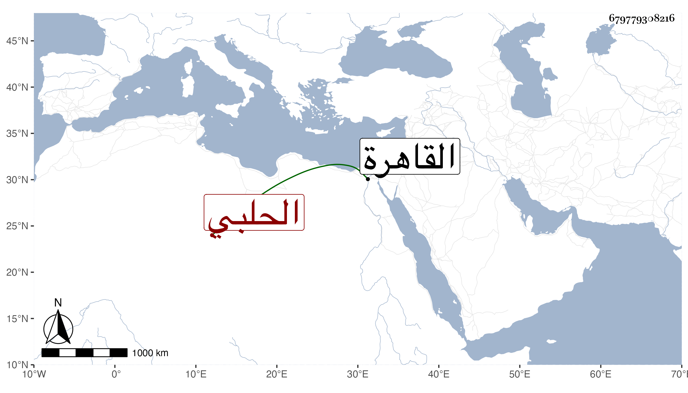

0902Sakhawi.DawLamic.ITO20230111-ara1.EIS1600.679779308216
Biography ID: 679779308216
218
محمد بن محمد بن خضر بن داود بن يعقوب البدر أبو البركات بن الشمس الحلبي الأصل القاهري الماضي أخوه الخضر وأبوهما ويعرف كأبيه بابن المصري . ولد سنة ثمان وثمانمائة بالقاهرة ونشأ بها في كنف أبيه فحفظ القرآن والمنهاج وألفية النحو ، وعرض على الولي العراقي والشمسين البرماوي وابن الديري والبيجوري وقرأ عليه المنهاج بتمامه وأسمعه أبوه علي الجمال الحنبلي مسند أحمد وسيرة ابن هشام وجمع الجوامع مع المسلسل وغيره وعلي الشرف بن الكويك المسلسل وصحيح مسلم والشفا وعلي الشموس البوصيري والشامي والبيجوري والشهاب البطائحي والولي العراقي وقاري الهداية في آخرين ، واشتغل قليلا وجود المنسوب على الشمس المالكي ، وباشر التوقيع عند الزينين عبد الباسط والأستادار واختص به ثم نافره . وحج وجاور وحدث باليسير حملت عنه مشيخة أبي غالب بن البناء ، وكان أحد صوفية سعيد السعداء ثم بالبرقوقية متوددا مقبلا على شأنه . مات في شعبان سنة ثمان وستين ودفن بتربة سعيد السعداء .
